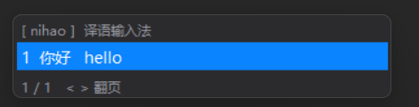

一个真正能打中文的输入法：
打 nihao 出候选 你好 hello —— 空格上屏中文，数字上屏外语。

真实候选窗样式 · 深浅色自适应
它首先是一个真正的中文输入法：候选以中文为主、外语释义并列。空格上屏中文，和任何输入法一样的直觉。
想要外语词？按 1 上屏 hello。上屏后自动联想下一个词，中文外语随心切换。
每次选择都在本地学习：高频词自动置顶，你的用词习惯沉淀为个人词频表（纯本地存储，绝不上传）。
轻到感觉不到它存在
Windows 单文件 260KB，内存约 30MB。无服务、无注册表、无依赖，关掉即消失。
基于 CC-CEDICT 全量词典，10.4 万条英文释义完全离线，冷门词也能中译英。
候选窗精确出现在文本光标下方，自动避让屏幕边缘，跟随系统深浅色。
泰语、匈牙利语、土耳其语、斯瓦希里语等词汇包一键切换，覆盖一带一路沿线语言。
拼不出词时回车原样上屏，打英文网址、代码、账号零切换成本。
无联网、无上报、无统计。你的每一次输入只存在你自己的电脑里。
词频动态调整 + 二元联想预测，输入习惯持续学习，候选越来越准。
一键安装包自动配置全部内容；不想要了，三处入口任选一处干净卸载。
和成熟输入法一样的操作直觉
| 空格 / 回车 | 上屏中文（像正常输入法），并联想下一个词 |
| 1–8 | 上屏外语词（学习动作） |
| 1–8 | 选词，外语词直接上屏 |
| 空格 / 回车 | 上屏首选；无候选时原文直通并退出 |
| < > / ↑ ↓ | 翻页 / 移动高亮 |
| Esc / 退格 | 退出外语模式 / 删除字母 |
| Ctrl+Space | 总开关（暂停 / 恢复整个输入法） |
| Ctrl+Alt+Q | 退出程序 |
英语内置全量，其余语言词汇包一键换装
全部免费开源（MIT）
./mac-setup.sh uninstall